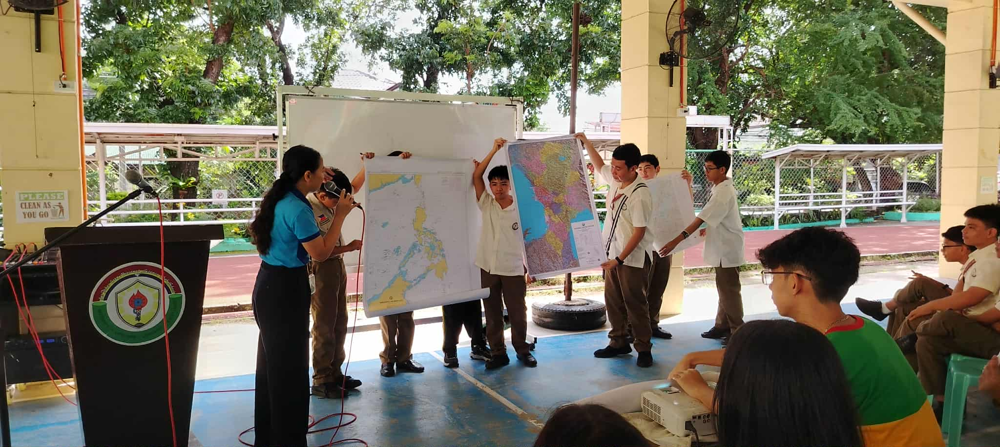

What is the most important thing I learned from the event?
From this event, I learned that Science Month is not just about competitions. It is about working together as a whole in order to build a better school community. It also showed me how science connects us and encourages teamwork, creativity, and problem-solving in ways that go beyond just books and exams.
How can I apply what I learned in real-life situations?
During this event, I learned many things which I can use to serve not just our school community but also our society. By simply learning how to properly take care of our environment, inspiring others to bring out their values, and applying scientific thinking to solve everyday problems, I can make a positive impact on those around me.
Did I actively participate in the event? How?
I actively participated in the event by joining some of the competitions, specifically STEMAZING. In this competition, chosen researchers had to create a research paper based on a given problem and present it in front of an audience. Besides this, there were also different activities in which all of us were required to participate, which made the experience more engaging and hands-on.
If I were to teach this topic/subject to a classmate, how would I explain it?
To help others realize the importance of an event, you have to get them to experience it firsthand. I would describe the event, explain what we did, and share my own experience so they can understand how participating helped me learn new things, work with others, and appreciate the value of science in everyday life.
Why is it important to have an event (per subject)?
Because each subject is equally important and deserves representation in schools. It is also an opportunity to let students who are good in specific areas showcase their talents and encourage everyone to explore their interests. Events like this make learning fun and meaningful, not just a requirement.
What is the most important thing I learned from the event?
I learned that teamwork and sportsmanship is essential. It’s not just about winning, but about supporting each other and respecting everyone during activities.
How can I apply what I learned in real-life situations?
Learning how to be fair, follow rules, and encourage others can be applied in school, sports, or even daily interactions with friends and family. Treating others with respect and helping them do their best is part of what I learned.
Did I actively participate in the event? How?
Although I did not participate directly, I was there to support my classmates. Cheering them on and being involved in the sidelines helped me feel connected and part of the team.
If I were to teach this topic/subject to a classmate, how would I explain it?
I would explain that MAPEH is not only about physical activity or skills, but also about learning values like teamwork, discipline, and perseverance. Experiencing it is the best way to understand its importance.
Why is it important to have an event (per subject)? Explain your answer.
Events are important because they allow students to apply what they learn in real situations. MAPEH has always been important because it combines physical skills with character-building, which helps students grow holistically.


What is the most important thing I learned from the event?
Territorial disputes are not a joke; they are issues currently being faced today. We should learn to actively understand and follow what’s happening in our country to become responsible citizens.
How can I apply what I learned in real-life situations?
By simply bringing awareness to others, loving our country, and being informed about national issues, I can contribute to protecting our country and making better decisions as a citizen.
Did I actively participate in the event? How?
Yes, students from G8 to G10 were seated to watch a symposium on Philippine maritime zones and boundaries. Here, I was able to listen and absorb important information. Additionally, we had a test about it during our AP class, which helped me reflect on what I learned.
If I were to teach this topic/subject to a classmate, how would I explain it?
I would teach what I learned during the symposium and emphasize the importance of awareness about our country’s boundaries, maritime zones, and national issues.
Why is it important to have an event (per subject)? Explain your answer.
AP has always been important as it discusses our country. Events like this allow students to learn real-life applications of what we study in class, understand current issues, and become more responsible citizens.